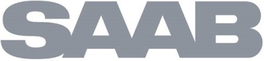
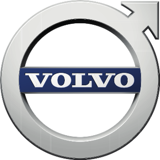
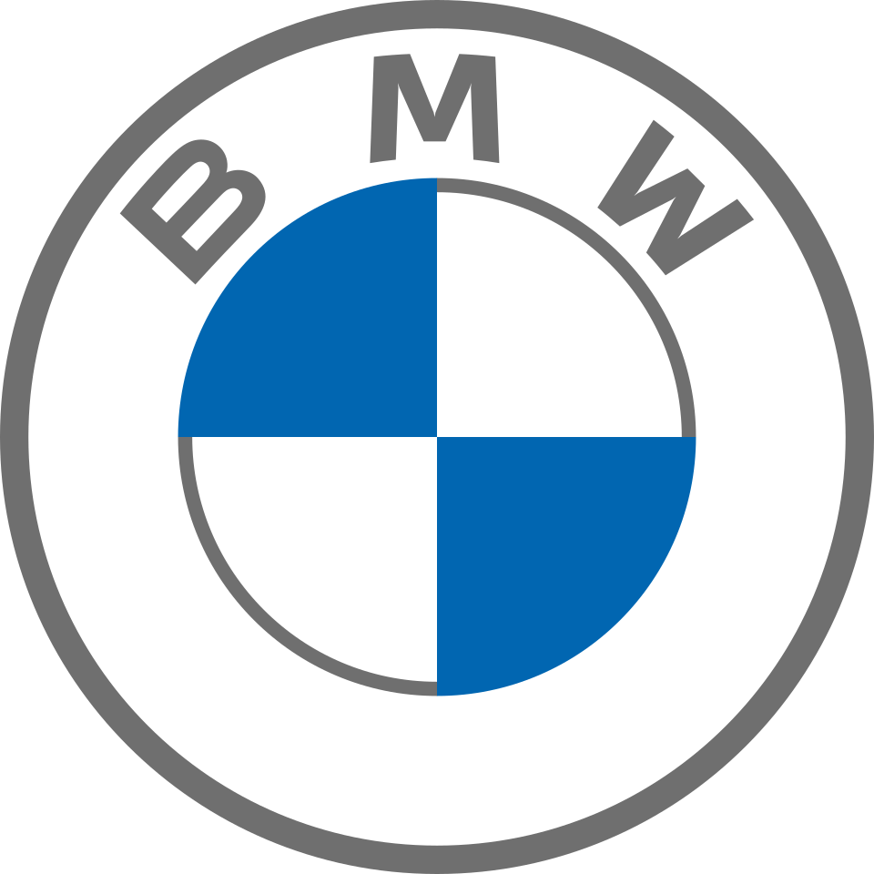
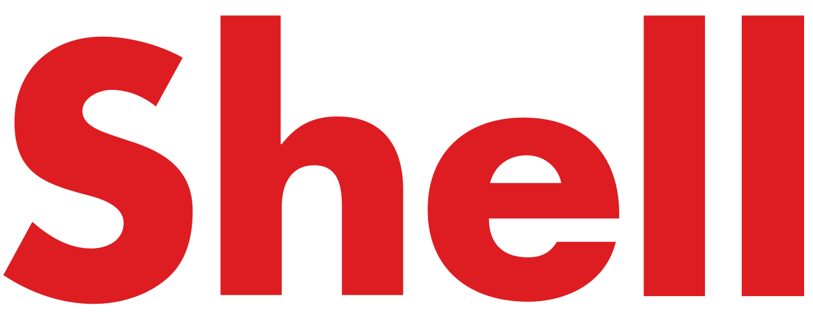

홈 > 브랜드 매거진 > 사브
사브
사브(Saab)는 1937년 설립된 스웨덴의 항공우주·방산 기업이자, 1947년부터 생산됐다 2011년 종료된 자동차 브랜드를 함께 일컫는다.
산업 분야 모빌리티 · 공개 등급 자료 기반 · 브랜드 평가 4.3 ★

한눈에 보는 브랜드
사브(SAAB)는 1937년 스웨덴에서 공군용 항공기를 만들기 위해 설립된 항공기 제조사로 출발했다. 제2차 세계대전 종전 후 사업 다각화를 위해 1945년 자동차 설계에 착수해 1949년 첫 양산차 사브 92를 내놓으며 자동차 산업에 진출했다.
그러나 자동차 부문은 2011년 12월 파산했고, 항공·방산을 담당하는 사브 AB(Saab AB)는 그리펜 전투기를 앞세워 현존한다. 사브 AB의 2024년 수주잔고는 약 1,870억 크로나에 이르며, 한 해 신규 채용만 약 2,913명에 달하는 글로벌 방산 기업이다.
브랜드 관점
사브 브랜드에서 가장 먼저 읽어야 할 것은 하나의 이름 아래 운명이 갈린 이중 구조다. 자동차 사브는 항공 엔지니어링에서 비롯된 터보 기술과 안전 우선 설계로 엔지니어·학자·비행사 등 마니아층의 컬트적 위상을 얻었지만, 2000년 제너럴모터스(GM) 완전 인수 후 정체성이 희석됐고 2011년 파산, 이후 인수자 NEVS의 재기 실패로 사실상 소멸했다.
반면 같은 뿌리에서 갈라진 사브 AB는 그리펜 전투기와 글로벌아이 조기경보기를 무기로 글로벌 방산 시장에서 약진 중이며 2024년 유기적 매출이 23% 늘었다. 즉 소비자 브랜드는 사라졌으나 기술 브랜드는 오히려 성장한 드문 사례다.
한국 맥락에서도 사브 AB는 공중조기경보, 전투기 무장 등 방산 협력 후보로 거론되어, 한 브랜드의 두 얼굴을 분별해 접근하는 것이 핵심이다.
시작과 성장
기원은 1937년 스웨덴 항공기 제조사 설립으로 거슬러 올라간다. 전후 시장 위축에 대응해 1945년 자동차 설계 프로젝트(내부명 프로젝트 92)를 시작했고, 시제차 우르사브(Ursaab)를 거쳐 1949년 12월 첫 양산 모델 사브 92의 본격 생산에 들어갔다.
1968년 사브 99, 1978년 사브 900으로 이어지며 터보차저를 대중차에 본격 도입해 브랜드 정체성을 굳혔다. 1989년 GM이 지분 50%를 확보했고 2000년 완전 인수했다.
이후 2010년 2월 네덜란드 스파이커(Spyker)에 매각됐으나 경영난이 이어졌고, 중국 컨소시엄과의 거래를 GM이 기술 이전을 이유로 거부하면서 2011년 12월 19일 파산을 신청했다. 2012년 6월 중국계 NEVS가 파산 자산을 인수해 전기차 부활을 시도했으나 다시 좌초했다.
이 과정에서 항공·방산 부문은 분리된 채 사브 AB로 존속했다.
브랜드 아이덴티티
사브의 가치관은 항공공학에서 길어 올린 합리적 엔지니어링에 뿌리를 둔다. 자동차 사브는 안전을 먼저 설계하고 인간공학, 공기역학, 디자인 순으로 차를 만드는 역순 개발 철학을 표방했으며, 두꺼운 필러와 조종석을 닮은 계기판, 전방 힌지 후드 같은 비관습적 형태로 표현됐다.
사브 92의 공기저항계수 0.30이 이를 상징한다. 로고에는 왕관을 쓴 그리핀(griffin)이 자리해 스웨덴 남부의 문장 전통을 잇는다.
타깃은 유행보다 본질을 따지는 전문직·지식인층이며, 브랜드 보이스는 과시하지 않고 기능과 이성으로 설득하는 절제된 북유럽적 어조를 띤다.
제품과 서비스
제품 포트폴리오는 시기에 따라 완전히 다르다. 과거 자동차 사브는 사브 92를 출발점으로 사브 99, 사브 900, 그리고 GM 시대의 9-3·9-5 세단과 컨버터블을 통해 터보 성능과 안전성을 함께 내세웠다.
현재 사브 AB의 제품은 군용 항공·방산 시스템으로, 핵심은 그리펜 E/F 전투기와 글로벌아이 조기경보통제기다. 여기에 레이더·감시·미사일 등 방산 시스템과 지원·정비 계약이 더해진다.
채널 역시 일반 딜러망에서 각국 정부·군 조달기관 대상의 직접 수주 방식으로 전환됐다.
현재 상태
자동차 부문 사브 오토모빌은 파산 후 청산 절차를 거쳐 신차 사업이 종료된 상태다. 반면 항공·방산 부문 사브 AB는 스웨덴 스톡홀름에 본사를 두고 미카엘 요한손(Micael Johansson) 사장 겸 최고경영자 체제로 운영된다.
2019년 10월 호칸 부스케의 뒤를 이어 취임한 그의 지휘 아래 수주가 가파르게 늘어, 2025년 콜롬비아가 약 31억 유로 규모로 그리펜 E/F 17대 도입 계약을 체결했고 태국·프랑스 등으로 수주가 확대됐다. 2024년 수주잔고는 약 1,870억 크로나를 기록했다.
그 밖의 세부 재무 지표는 미공개.
타임라인
BI/CI 변천사
함께 읽을 브랜드
모빌리티 · 매거진 완성할리데이비슨 모빌리티 · 편집 검수아우디
모빌리티 · 편집 검수아우디 모빌리티 · 편집 검수Mobil
모빌리티 · 편집 검수Mobil
할리데이비슨은 모터사이클보다 자유와 소속감의 의식을 더 강하게 판매한다. 제품은 이동수단이지만 브랜드의 핵심은 엔진음, 라이딩 문화, 커뮤니티, 반항적 이미지가 결합...

모빌리티 · 편집 검수볼보볼보(Volvo)는 1927년 스웨덴 예테보리에서 출발한 자동차 브랜드로, 승용차(볼보 자동차)와 상용차(볼보 그룹)로 분리돼 있다.

모빌리티 · 편집 검수BMWBMW는 이동수단을 만드는 회사를 넘어, 주행 감각과 조형 언어를 함께 설계하는 디자인 브랜드다. BMW의 강점은 성능 수치만으로 설명되지 않는다. 운전자가 차를 보...
모빌리티 · 편집 검수아우디아우디(Audi)는 독일 잉골슈타트에 본사를 둔 폭스바겐 그룹 산하 프리미엄 자동차 제조사이다.
모빌리티 · 편집 검수MobilMobil는 1966년에 기록된 Energy 계열의 브랜드 아이덴티티 사례입니다. Chermayeff & Geismar가 아이덴티티 작업의 디자이너로 기록되어 있습니...

모빌리티 · 편집 검수Shell셸은 영국·네덜란드에 뿌리를 둔 글로벌 에너지·석유 기업으로, 원유 탐사와 생산부터 정유, 가스, 화학, 주유소 소매 판매까지 에너지 가치사슬 전반을 아우른다. 빨강...
모빌리티 · 자료 기반현대자동차현대자동차(Hyundai Motor)는 한국을 대표하는 자동차 기업으로, 인터브랜드 2025 베스트 코리아 브랜드 2위(브랜드 가치 약 27.9조 원)에 올랐다.
모빌리티 · 편집 검수페라리페라리(Ferrari)는 이탈리아 마라넬로에 본사를 둔 럭셔리 스포츠카 제조사이다.